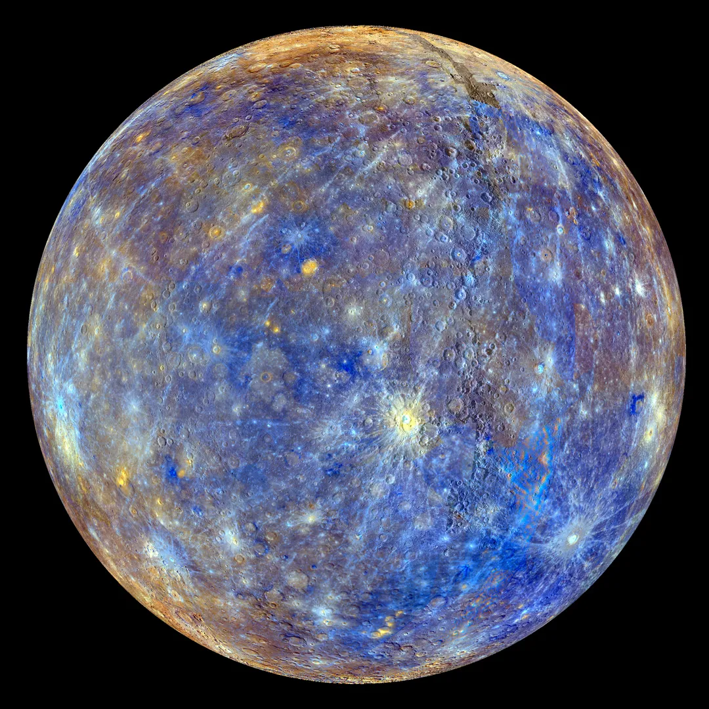

Merkur je nejmenší planeta Sluneční soustavy a zároveň nejbližší planeta ke Slunci. Kvůli své blízkosti ke Slunci má velmi vysoké teploty během dne.
Povrch Merkuru je kamenitý a velmi podobný povrchu Měsíce. Je pokryt množstvím kráterů vzniklých dopady asteroidů a meteoritů.
Merkur má velmi slabou atmosféru, která téměř nedokáže udržet teplo. Proto jsou zde extrémní rozdíly mezi denní a noční teplotou.
Jeden rok na Merkuru trvá pouze 88 dní. Planeta nemá žádné měsíce ani prstence.

Teploty na Merkuru mohou během dne dosáhnout až 430 °C, zatímco v noci klesají pod −180 °C.
Merkur oběhne Slunce nejrychleji ze všech planet. Díky své rychlosti byl pojmenován podle římského boha posla Merkura.